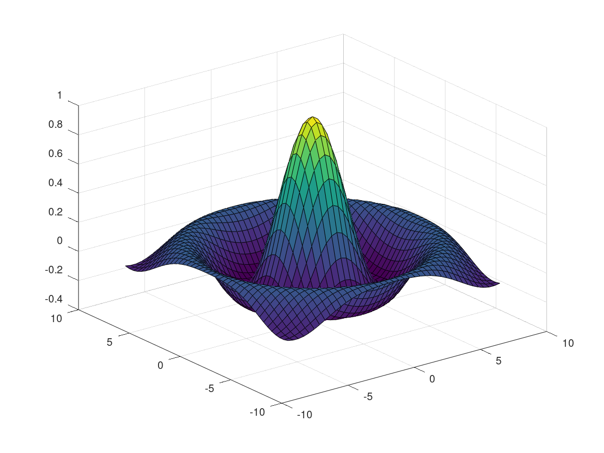

clc clear # not a function file: 1; function foo () do_something (); endfunction function do_something () do_something_else (); endfunction eval ("bar = 3"); bar #source('/Users/zhanghongliang/Documents/Octave/FunctionsandScripts/ScriptFiles.m')#would lead to software crash
bar = 3 bar = 3
# # Some *bold*, _italic_, or |monospaced| Text with # a <https://www.octave.org link to *GNU Octave*>. ## # "Real" Octave commands to be evaluated sombrero ()
% % # Numbered list item 1 % # Numbered list item 2